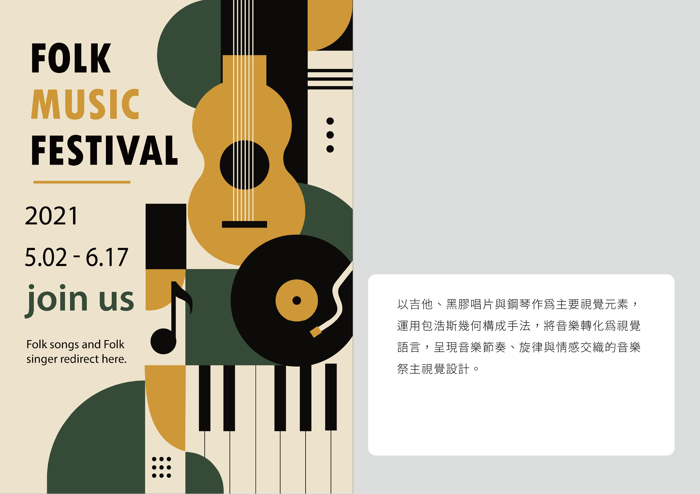
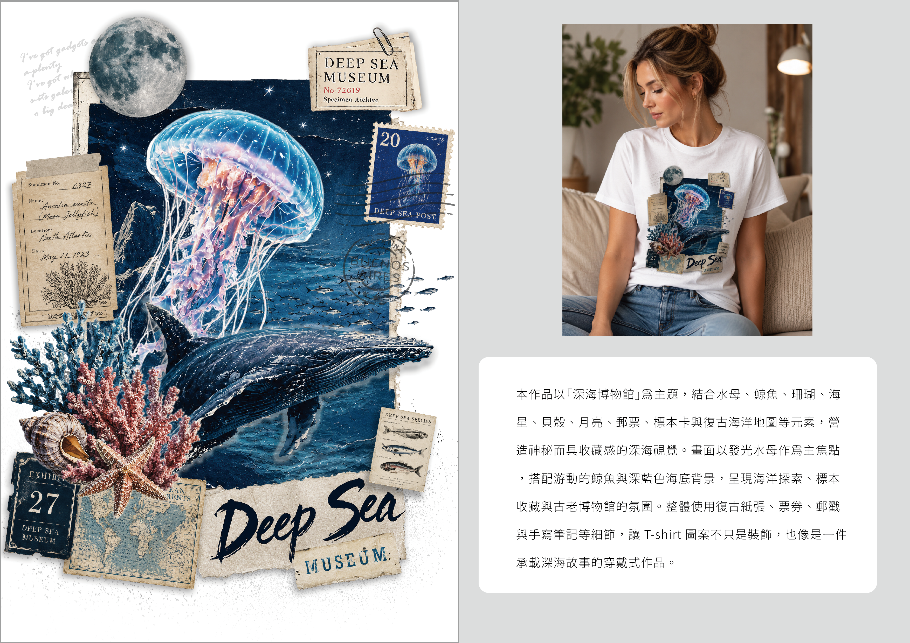
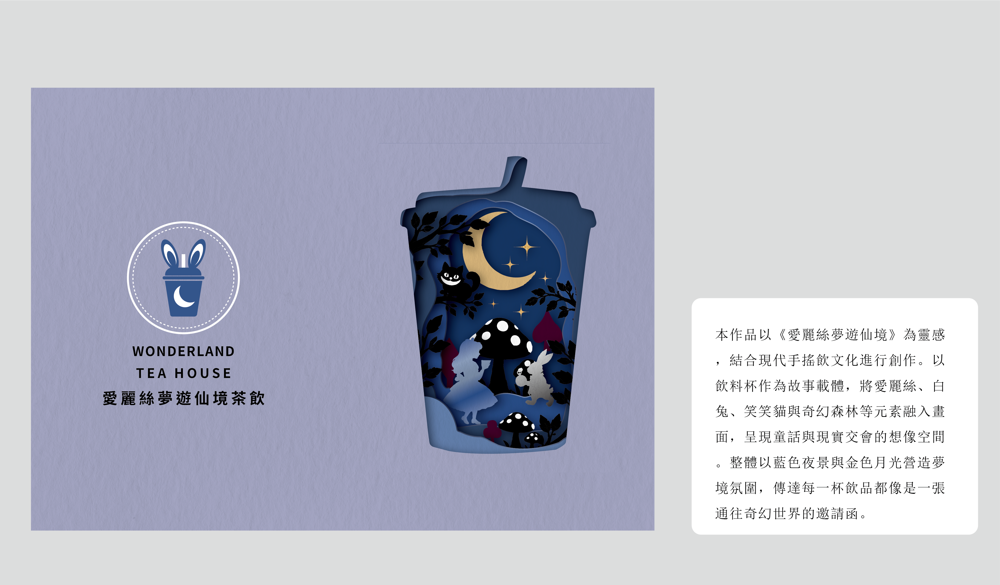
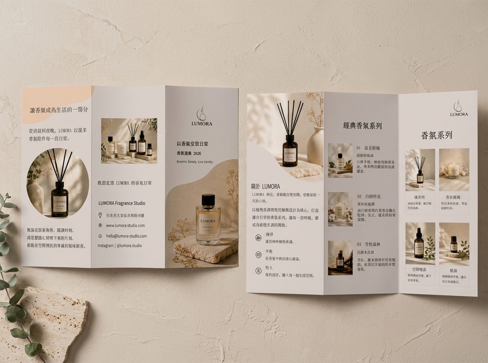
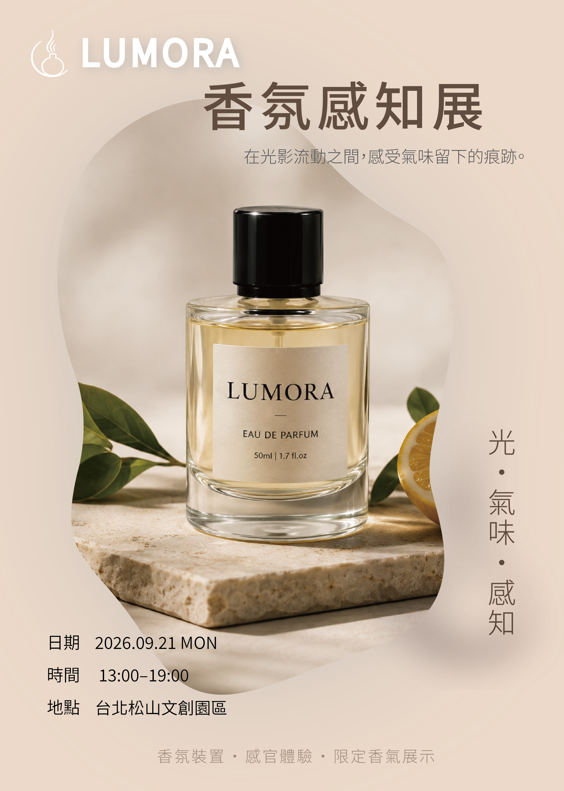

01
Flyer Design
Music Event Flyer
以音樂活動宣傳為主題，透過強烈的影像節奏、標題層級與版面留白， 建立具有現場感的視覺張力。畫面保留資訊傳達的清晰度，同時讓圖像與文字 形成更具律動感的宣傳語氣。
Selected Works
A curated selection of visual design works across event promotion, apparel graphics, poster layout and experimental composition.

01
Flyer Design
以音樂活動宣傳為主題，透過強烈的影像節奏、標題層級與版面留白， 建立具有現場感的視覺張力。畫面保留資訊傳達的清晰度，同時讓圖像與文字 形成更具律動感的宣傳語氣。

02
Apparel Graphic
以海洋意象作為服飾圖像主題，將插畫、色彩與穿著情境整合成完整視覺。 設計重點放在圖案辨識度與商品化應用，讓平面圖像能自然延伸到 T-shirt 的日常穿搭場景。

03
Poster Design
以科技活動與資訊展覽為核心，透過幾何框架、視覺動線與資訊層級建立主視覺。 作品著重於展覽識別的清楚傳達，並以俐落的排版方式呈現活動的現代感與科技感。

04
Experimental Layout
以愛麗絲故事感與立體剪裁概念作為創作起點，嘗試將角色想像、紙張層次與版面結構 結合。畫面透過空間感與圖像配置，呈現介於插畫、平面設計與展示視覺之間的實驗性。


本作品將香氛產品、品牌故事與活動資訊整合為三摺 DM 與海報視覺， 練習品牌資訊整理、版面層級與印刷品應用。
05
BROCHURE DESIGN / POSTER DESIGN
LUMORA 是一個以「香氣安放日常」為概念的香氛品牌視覺練習。作品延伸三摺 DM 與活動海報設計，透過柔和色調、自然光影與留白排版，呈現安靜、溫柔且具生活感的品牌氛圍。
06
POSTER DESIGN / VISUAL DESIGN
本系列收錄節慶、字體實驗與美妝視覺三種不同類型的海報設計，從 Illustrator 向量漸層、動態字體編排，到人物修圖與商業版面整合，呈現不同主題下的視覺構成與資訊層級。